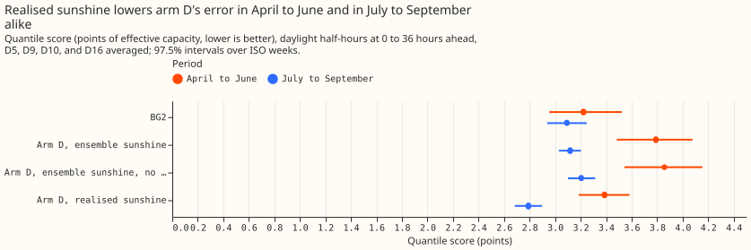
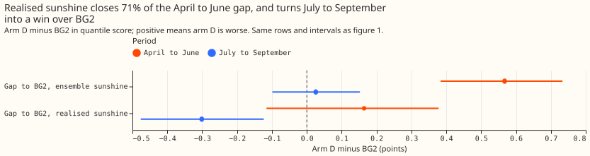
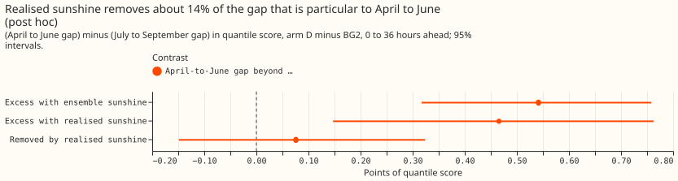
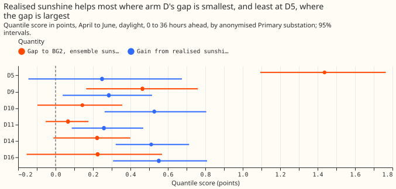
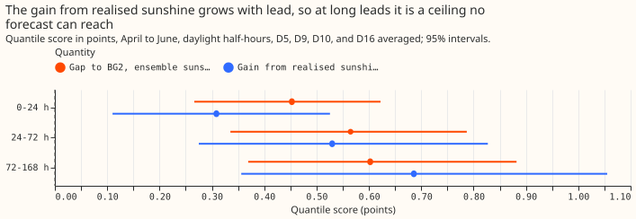

Does the ensemble sunshine forecast cause the April to June gap between the best-guess stack and BG2?
If the best-guess demand forecast were given the sunshine that actually happened, its April to June error gap to BG2 would shrink by 71%. The same change lowers its error almost as much in July to September, so the ensemble sunshine forecast explains only about 14% of the April to June excess over July to September. The best-guess stack is our assembled demand forecast for six primary substations, built from a base forecasting engine plus error-correction layers. We call the engine alone arm D, and it is driven by ECMWF ensemble weather forecasts. BG2 is the benchmark, experiment 87's production-style XGBoost forecast. We re-ran arm D with realised sunshine (downward shortwave irradiance from the satellite estimate of the Copernicus Atmosphere Monitoring Service, CAMS) in place of the ensemble's sunshine at the forecast half-hours, and measured how much of arm D's gap to BG2 disappears. Nothing was refitted. Realised sunshine is information that a real forecast would not have, so each gain is the most that a better sunshine forecast could give.
Scores are quantile scores in points of effective capacity (a substation's rated demand), and lower is better. "Arm D minus BG2" is positive where arm D is worse. Experiment 266 located the gap at D5, D9, and D10 and found that ensemble and realised sunshine agree on average, which does not show that the ensemble sunshine is not the cause; this experiment tests the ensemble sunshine directly. The method of adding a per-row shift to arm D's quantiles follows experiment 251's clip arm.





Results
- Verdict
partly supported. The pre-registered rule says the ensemble sunshine is implicated: the gain from realised sunshine is 71% of the quantile-score gap (P1 held) and 70% of the mean-absolute-error gap (P2 held), both with intervals above zero. The negative control weakens that reading, so the verdict stops short ofsupported. - Headline (April to June, daylight, 0 to 36 hours ahead, D5, D9, D10, and D16 averaged, 97.5% intervals over 14 ISO weeks). BG2 scores 3.223 (2.954 to 3.523) and arm D with ensemble sunshine 3.790 (3.484 to 4.077), a gap of +0.567 (+0.384 to +0.733). Arm D with realised sunshine scores 3.387 (3.186 to 3.584), a gap of +0.164 (-0.116 to +0.379).
- C1, quantile score: ensemble minus realised sunshine is +0.403 (+0.152 to +0.682). C2, mean absolute error of arm D's forecast: +0.713 (+0.253 to +1.219), against a gap of +1.021 (+0.721 to +1.285) points of effective capacity, 70% of the gap. The median and the mean forecast of arm D are identical, so the median stands for the mean.
- Negative control (July to September, same rows). The gap to BG2 is +0.026 (-0.099 to +0.152), and realised sunshine still improves arm D's score by 0.327 points (0.174 to 0.472), 81% of its April to June gain. With realised sunshine arm D beats BG2 by 0.301 points there (0.122 to 0.477).
- Post hoc: the April to June gap beyond the July to September gap. The April to June gap minus the July to September gap is +0.541 (+0.323 to +0.754) with ensemble sunshine and +0.465 (+0.138 to +0.748) with realised sunshine. The swap removes +0.076 of it (-0.181 to +0.355), 14%; the same reading on mean absolute error gives 15%.
- Calibration versus input. Setting the irradiance ratio and the solar shrink to 1 on the ensemble worsens the score by 0.066 points (interval -0.010 to +0.137), so the stored calibration helps slightly; the whole gain comes from the realised input.
- By substation (0 to 36 hours, 95% intervals). The gap and the gain are D5 +1.437 and +0.248 (-0.145 to +0.675), D9 +0.464 and +0.285 (+0.038 to +0.515), D10 +0.143 and +0.527, D16 +0.225 and +0.551, D11 +0.066 and +0.258, and D14 +0.222 and +0.511. Realised sunshine helps least at D5, where the gap is largest.
- By lead band (decision Primaries). The gap and the gain are +0.453 and +0.309 at 0 to 24 hours, +0.565 and +0.530 at 24 to 72 hours, and +0.603 and +0.686 at 72 to 168 hours. The gain grows with lead and exceeds the gap at long leads, so the gain there is an upper bound only.
- Tail calibration (April to June, daylight, 0 to 36 hours, decision Primaries). Coverage and pinball loss, BG2 then arm D with ensemble sunshine then arm D with realised sunshine, are 0.015, 0.019, and 0.012 at the 0.01 quantile (pinball 0.203, 0.263, 0.236); 0.052, 0.075, and 0.049 at 0.05 (0.676, 0.924, 0.807); 0.976, 0.922, and 0.932 at 0.95 (0.985, 1.031, 0.938); and 0.993, 0.969, and 0.977 at 0.99 (0.340, 0.324, 0.289). Arm D's 0.95 and 0.99 quantiles cover less than their nominal share of observations with both inputs. The curtailment-cost metric was not run, because it needs the node and generator forecasts that this swap does not produce.
- Data and fits. The 561,207 rows of experiment 251, with experiment 136's monthly fits (no refit) and intervals from resampling whole ISO weeks; D11 and D14 are reported beside the decision Primaries. The ensemble temperature is unchanged in every arm. CAMS sunshine was present at every scored half-hour.
- What this cannot tell. The shift keeps arm D's stored quantile widths, which came from ensemble residuals, so the quantile score understates what realised sunshine would do to the spread. The monthly fits were trained on calibrated ensemble sunshine, so realised sunshine is slightly out of distribution, and the offset tables and recipe R of arm D are not re-simulated. One year gives 14 ISO weeks per season. The post hoc reading compares two gains, each with an interval wider than their difference, so it cannot tell a removal of 0% from one of about 50%. July to September 2025 falls in the first months of the scored year, when the monthly fits have the least history. The tail coverage in the table is that of the shifted quantiles with the stored spread, not of a re-made spread.
- What the next experiment should answer. Refit arm D with realised sunshine as the solar driver in April to June, to see whether the excess is in the solar term itself, and look at D5's and D9's solar term in those months.
Checks
- Gates. P0 held: the engine with ensemble weather reproduces experiment 136's stored mean exactly (largest difference 0.0 at all six substations). Arm D minus BG2 in April to June over all rows and six substations is +0.322 (+0.199 to +0.438), which agrees with experiment 266's +0.319 to within 0.005. P0b held on the mean: the engine's irradiance from CAMS differs from the cache's by -0.002 W/m² on average over April to June 2026 at D5, with half-hour differences up to 24 W/m² (mean irradiance 221 W/m²) from re-spreading each hour by the sun's height.
- Median minus mean forecast. 0.0 at all six substations, because arm D's quantiles are symmetric about the mean.
- Error of the median beside the quantile score. The mean absolute error contrast (+0.715) and the quantile-score contrast (+0.403) agree in sign in every subset reported above.
- Triggers. Trigger 5 fired: the July to September control, which should change nothing, moved the score by +0.327, more than its half-width of 0.15. This experiment treats that result as evidence that realised sunshine improves every season. A Sonnet audit (the brief allowed no Opus) re-derived every headline number from the stored files and matched them. It found two faults, both fixed and re-run: the realised-sunshine arm used the control member's temperature instead of the member mean (the scores moved by 0.002 at most), and the two seasons' week resamples shared a random seed (the interval of the seasonal removal widened from -0.149 to +0.324 to -0.181 to +0.355). Triggers 1 to 4 and 6 did not fire. Trigger 7 applies if a later design depends on this reading.
Method
- Weather swap. Arm D's base engine is experiment 136's A2 (monthly fits, ensemble-driven, with the Kalman filter). Re-forecast it with the ensemble's shortwave replaced by realised CAMS irradiance at the forecast's target half-hours only (the analysis proxy and the filter's past residuals stay as stored), with the irradiance ratio set to 1 and the solar shrink to 1. The monthly fits were trained on calibrated ensemble irradiance, so the realised input is slightly out of distribution; a second arm with ensemble irradiance and the same identity calibration separates the calibration effect from the input effect. Temperature stays the ensemble's, so only sunshine changes. Nothing is refitted.
- Arm D with realised sunshine. Add the per-row change in the base engine's mean to every quantile of stored arm D, the method experiment 251 used for its clip arm. The offset tables, winter night offset, and recipe R of arm D are not re-simulated; this is a caveat.
- Rows. The six stored Primaries, April to June daylight half-hours (the stored daylight flag, which matches clear-sky irradiance above 20 W/m² on 97.8% of rows); the decision Primaries D5, D9, D10, and D16 are the pooled headline, and D11 and D14 are reported beside them.
- Gate (P0). The re-forecast with ensemble weather must reproduce experiment 136's stored A2 mean.
- Stratification. Results are reported by lead band (0 to 24, 24 to 72, 72 to 168 hours) and per substation; the decision uses 0 to 36 hours. A lead of 72 hours or more is an upper bound only, since no forecast has that sunshine.
- Reported: absolute quantile score and mean absolute error for BG2, arm D with ensemble sunshine, arm D with realised sunshine, and the base engine alone; tail coverage and pinball loss at 0.01, 0.05, 0.95, and 0.99; per-substation results.
- Caveat. CAMS sunshine exists only after the fact, so arm D with realised sunshine is a ceiling for an improved sunshine input, not a deployable forecast.
- Checks. Median minus mean forecast per site, the mean-forecast error beside the quantile score, and the audit triggers, recorded in the write-up.